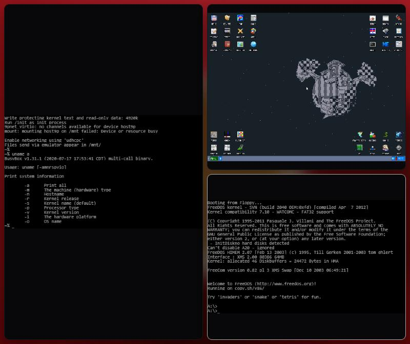

XKernel, open.
Your whole machine,
as a multi‑VM.
Every operating system you use runs side by side, at full speed, over your wallpaper. No bar. No dock. No assistant. Just you and your machines.
Planning · Stage 0 · open source from day one
01 · Subtraction
What if the operating system did almost nothing?
- The bar at the top.
- The dock at the bottom.
- The search box that searches the internet.
- The assistant nobody invited.
- The news feed next to the weather.
Everything that took the machine away from you, gone. What's left is your wallpaper, and the quiet.
02 · Kernels
Every OS is a guest of equal rank.
There is no main operating system. Each one is a Kernel, running on real hardware through Linux's KVM, tiled the way Hyprland tiles windows. Windows on the left, Linux on the right, Haiku in the corner because you felt like it.
03 · Speed
A virtual machine isn't slow because virtualization is slow.
It's slow because it's starved.
Guest code runs directly on your CPU. Pinned cores, huge pages, no host noise.
A real GPU, not an emulated one. VFIO passthrough, or SR-IOV to share one GPU across tiles.
Looking Glass carries frames through shared memory into your tiles. No encoding, no copies over a network.
The host draws a blurred wallpaper, cached once. That's its whole job. Target: close to 120 fps inside a Kernel.
04 · Always there
You don't boot your operating systems. You continue them.
Close the lid and every Kernel is saved, mid-sentence, mid-compile, mid-game. Open it, and each tile sharpens out of the wallpaper exactly as you left it.
05 · Run anything
Linux runs. So every distro runs.
And next to it: the BSDs, illumos, Haiku, Plan 9, ReactOS, retro systems and Windows, if you bring your own license. Nothing to brick: a broken Kernel is one tile, not your machine.
Not macOS or iOS. Apple's license only allows macOS on Apple hardware, and iOS can't be virtualized legally.
06 · It already boots
Real operating systems, in a browser tab.
The showcase boots Buildroot Linux, KolibriOS, FreeDOS, Tiny Core, Damn Small Linux and HelenOS for real, tiled over your wallpaper. Put them to sleep, reload the page, and they continue where they were. It runs on v86 today. XKernel will run it on KVM.

Boot the showcase07 · Papers
Five papers. One plan.
08 · Roadmap
From a Pi to the beast.
- 0The workshop
A Raspberry Pi, a build, a stock kernel that boots.
- 1Our kernel boots
The patch stack starts. KVM is there.
- 2One Kernel
One guest, fullscreen, usable.
- 3Tiles
The Hyprland fork, the blurred wallpaper.
- 4xsh
Talk to XKernel.
- 5Always there
Save and resume everything.
- 6Windows
UEFI, TPM, virtio drivers.
- 7Speed
VFIO, SR-IOV, Looking Glass, benchmarks.
- 8One file
xkernel.conf describes the machine.
- 9More Kernels
BSDs, illumos, Haiku and friends, tested.
- 101.0
XKernel, open.